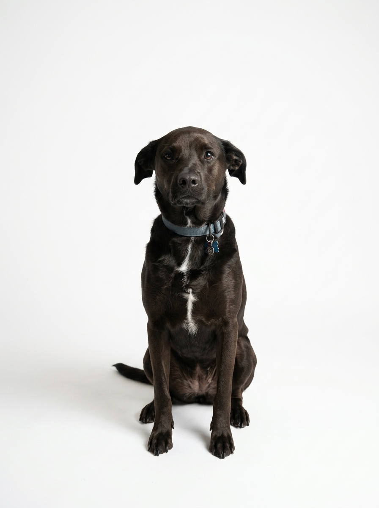

Las canas en el hocico son medallas de años de amor incondicional. Descubre cómo adaptar tu hogar y su rutina para que viva su vejez sin dolor y lleno de alegría.

1. ¿Cuándo empieza la etapa senior según su tamaño?
La vejez no es una enfermedad, sino una etapa de la vida con necesidades específicas. Las razas gigantes y grandes entran en la etapa senior alrededor de los 6 a 7 años, mientras que las razas medianas y pequeñas suelen hacerlo entre los 8 y 10 años.
2. Pequeños cambios en casa que hacen una gran diferencia
- Alfombras o pasillos antideslizantes: Los pisos de cerámica o madera laminada son como pistas de hielo para un perro mayor. Colocar tapetes en sus rutas habituales evita resbalones y le devuelve la confianza al levantarse.
- Cama ortopédica de espuma viscoelástica: Distribuye el peso sin presionar codos ni caderas, aislándolo del frío del suelo.
- Rampas estables: Para subir al auto o al sofá sin el impacto brusco del salto sobre la columna y los hombros.
- Platos ligeramente elevados: Facilitan comer y beber sin sobrecargar las vértebras cervicales.
3. Nutrición antiinflamatoria y salud articular
Mantener a tu perro senior en su peso ideal es el mejor analgésico articular que existe. Además, al contrario del antiguo mito de "bajar la proteína en viejitos", un perro senior sano necesita proteína de altísima calidad y fácil digestión para no perder masa muscular (sarcopenia), acompañada de ácidos grasos Omega-3 (EPA y DHA de aceite de pescado o krill) y condroprotectores indicados por su veterinario.
4. Mantener su mente joven y conectada
Los paseos cortos pero frecuentes (por ejemplo, tres paseos suaves de 15 minutos en lugar de uno largo agotador) y los juegos de olfato sencillos en casa estimulan la neuroplasticidad y previenen el Síndrome de Disfunción Cognitiva.
5. Qué incluye el chequeo geriátrico semestral
A partir de los 7 u 8 años recomendamos realizar cada 6 meses un perfil sanguíneo completo (hemograma y bioquímica renal/hepática), examen de orina, toma de presión arterial y evaluación de dolor articular.
Clínicas veterinarias y estéticas con manejo amable
Espacios con protocolos de bajo estrés, sin jaulas de espera y con trato cálido hacia tu familia.
LOCALIZAR VETERINARIAS VERIFICADAS ↗